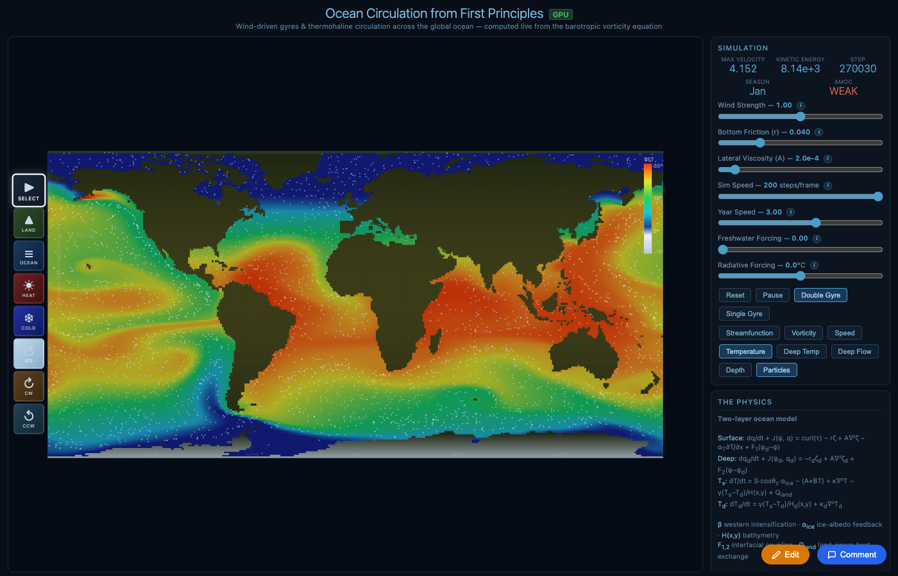
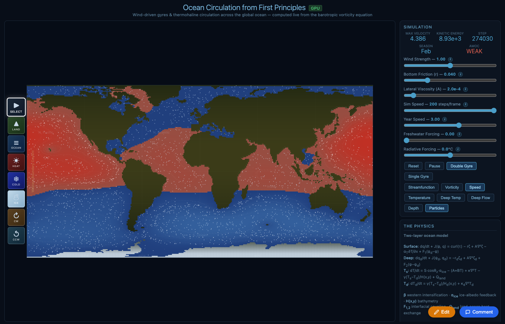
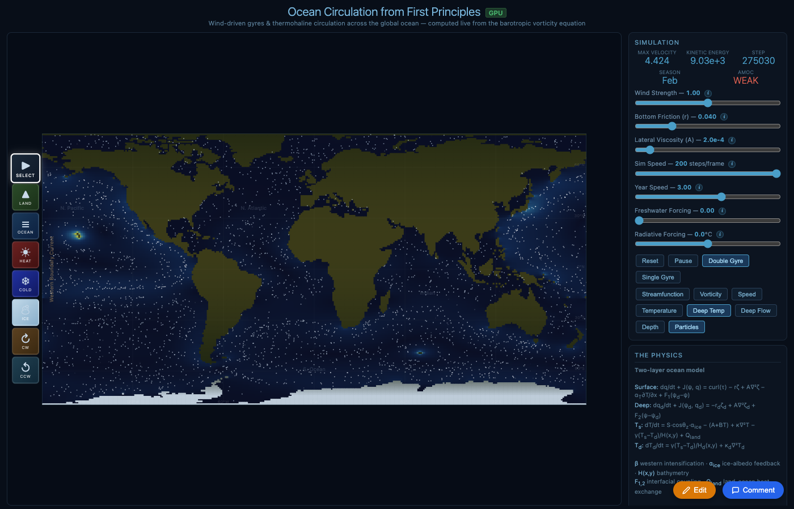
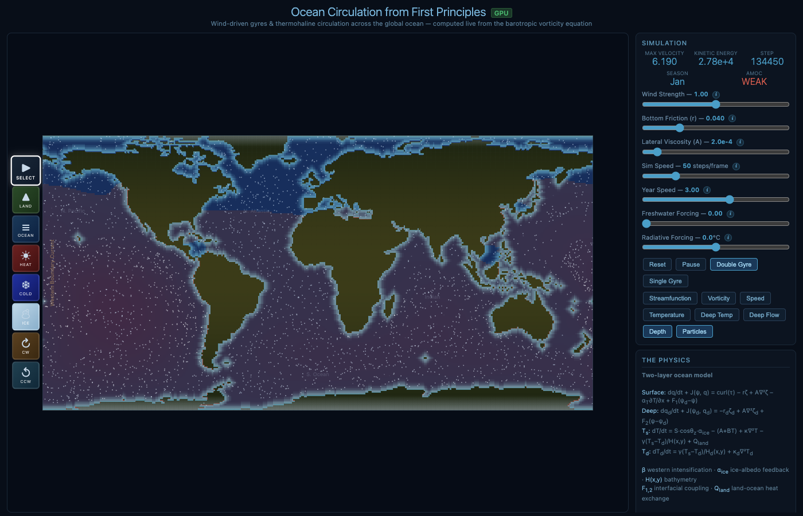
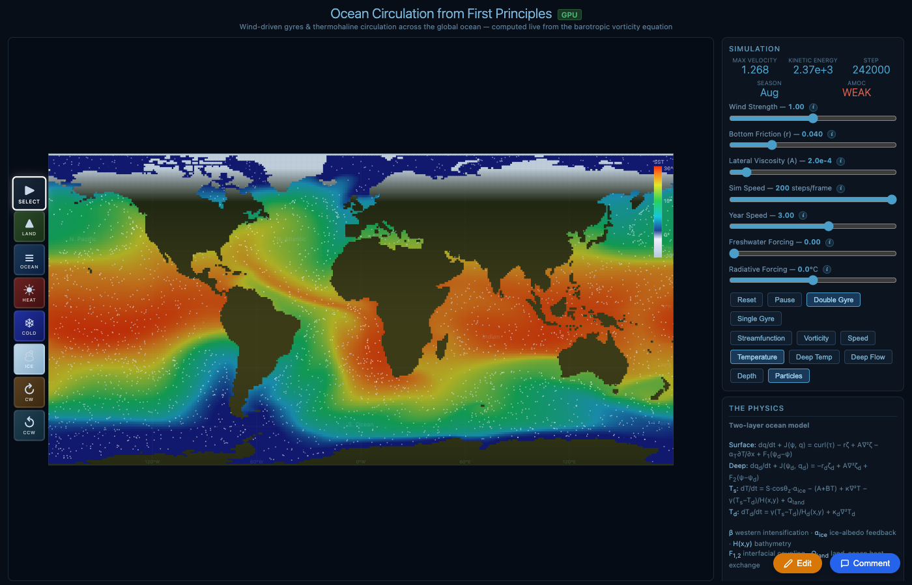

We spent a day building a real-time ocean circulation model that runs in the browser via WebGPU. By the end, it had working thermohaline circulation, salinity-driven AMOC that collapses under freshwater forcing, and a 3.8°C RMSE against NOAA satellite observations — tuned by AI agents for about a dime in API costs.
Here's what we built, how we measure quality, and where we're going.

Sea surface temperature initialized from NOAA observations, evolved by the physics. Land shows seasonal temperature with altitude lapse rate from ETOPO1 elevation data.
SimAMOC solves the barotropic vorticity equation on a 360×180 grid (1° resolution) with two vertical layers — a 100m surface layer and a 4000m deep layer. It computes:
Everything runs on the GPU via WebGPU compute shaders. The simulation initializes from real NOAA satellite SST observations and uses ETOPO1 seafloor bathymetry — so it looks like Earth from frame one.
Streamfunction: red/blue = anticyclonic/cyclonic gyres

Speed: bright = fast currents (ACC, western boundaries)

Deep temperature (1000m): cold polar water fills deep basins

Real ETOPO1 bathymetry: shelves, ridges, trenches
To tune the model, we built a "Ralph Wiggum loop" — an iterative AI agent system that runs the simulation headlessly, compares output against observations, and proposes physics-informed parameter changes.
The loop uses Gemini 3.1 Flash Lite ($0.25 per million tokens) and consists of seven agents:
| Agent | Role | Runs |
|---|---|---|
| Physicist | Generates competing hypotheses from screenshots + data | Every iteration |
| Tuner | Translates winning hypothesis to parameter changes | Every iteration |
| Validator | Checks physical consistency, catches curve-fitting | Every iteration |
| Numerical Analyst | Checks for computational artifacts | When conservation fails |
| Skeptic | Audits trajectory for compensating errors | Every 4th iteration |
| Observational Scientist | Assesses reference data quality at problem latitudes | When polar errors dominate |
| Literature Agent | Checks parameter values against published models | When params hit bounds |
The Physicist agent receives four screenshots (temperature, streamfunction, speed, deep temperature) along with quantitative error metrics. It can see spatial patterns that zonal means miss — checkerboard artifacts, misplaced currents, boundary noise.
When the loop stalls for three iterations, it escalates to Claude for structural code review — looking for missing physics terms rather than parameter tuning.
We evaluate the simulation across four tiers, weighted into a composite score:
Does the simulation obey fundamental physical constraints? Temperature range realistic, equator-to-pole gradient exists, deep ocean colder than surface, AMOC positive. These are non-negotiable — if the simulation violates conservation, no amount of parameter tuning matters.
Do the right features emerge for the right reasons? We check seven diagnostics:
Does the simulation respond correctly to perturbations? Freshwater forcing should weaken the AMOC. Cooling should cool the ocean. These test causal structure, not just static fit.
How close is the sea surface temperature to NOAA OI SST v2 observations (1991–2020 annual mean)? Measured as RMSE across 15 latitude bands from 70°S to 70°N.
| Metric | Value | Target |
|---|---|---|
| RMSE vs NOAA SST | 3.8°C | <3°C |
| Composite score | 74.1% | >80% |
| AMOC | Positive (+0.006) | Stable positive |
| Freshwater → AMOC collapse | Yes | Yes |
| Western intensification | Intermittent | Consistent |
| Structural checks passing | 5/7 | 7/7 |
The midlatitudes (30–50°) are within 1–2°C of observations. The poles remain challenging — the NH high latitudes tend to run warm and the SH can oscillate. This is typical of coarse ocean models; even CMIP6 GCMs struggle with polar biases.
The single most important change was adding a salinity field. Before salinity, the simulation had temperature-driven density only — and the "Melt Greenland" scenario incorrectly cooled the North Atlantic instead of freshening it.
With salinity and a linear equation of state ρ(T,S), the physics changes fundamentally:
The result: cranking up freshwater forcing causes the AMOC to collapse from +0.004 to −0.0001 — a sign reversal in the overturning circulation. This is the Stommel bifurcation in action, the same physics that van Westen et al. (2024) showed could tip the real AMOC.
An honest audit reveals structural limitations that no parameter tuning can fix:
| Missing | Impact | Fixable? |
|---|---|---|
| Nordic Sea overflows | No sill hydraulics for Denmark Strait / Faroe Bank Channel | Parameterizable |
| Mesoscale eddies | Unresolved at 1° (need GM parameterization) | Yes, with GM90 |
| Mixed layer depth | Fixed 100m surface layer | Moderate effort |
| Atmospheric coupling | Fixed wind pattern, no weather | Add energy balance atmosphere |
| Sea ice dynamics | Only thermodynamic albedo, no ice transport | Moderate effort |
| Isopycnal upwelling | Southern Ocean AMOC closure too simple | Needs isopycnal coordinates |
For context: even the simplest model that correctly captures AMOC tipping (the Stommel two-box model) only needs temperature, salinity, and a density-driven flow. We now have all three with spatial structure — putting us above box models in capability, though below full GCMs like MOM6 or NEMO in resolution and physics detail.

The full SimAMOC interface: simulation view with temperature field, parameter sliders, view mode buttons, and real-time diagnostics (AMOC strength, velocity, kinetic energy, season).
The simulation runs entirely in the browser via WebGPU compute shaders (WGSL). Key optimizations:
The entire Wiggum loop — all iterations across all runs, including multimodal screenshots sent to the Physicist agent — cost approximately $0.10 in Gemini 3.1 Flash Lite API calls. At $0.25 per million input tokens and $1.50 per million output tokens, we could run thousands more iterations for under $10.
The real value was the agent dialectic: the Physicist hypothesizes, the Tuner proposes, the Validator catches bad physics. The Skeptic audits for curve-fitting. When all four stall, Claude reviews the actual code and finds structural bugs (like the missing deep buoyancy term) that no amount of parameter tuning could fix.
Now that the Stommel bifurcation works, we want to systematically map the tipping point: gradually increase freshwater forcing, record AMOC strength, find the collapse threshold, and test if it recovers. We'll compute the FovS early warning signal from van Westen et al.
Basin-by-basin error analysis, better wind stress patterns from ERA5 reanalysis, and latitude-dependent diffusion should close the gap. Seasonal cycle validation against monthly NOAA climatology.
V-cycle multigrid on GPU would give ~10x convergence improvement, enabling resolution doubling to 0.5° (720×360). At higher resolution, the Gulf Stream separates correctly and mesoscale eddies begin to appear.
WOA23 salinity initialization, ERA5 wind stress forcing, and validation against the RAPID AMOC array at 26.5°N. An SST anomaly view that shows exactly where the model deviates from observations.
SimAMOC is built by Derek Lomas and Luke Barrington, with AI assistance from Claude. The simulation code, knowledge bank, and Wiggum loop are open source.